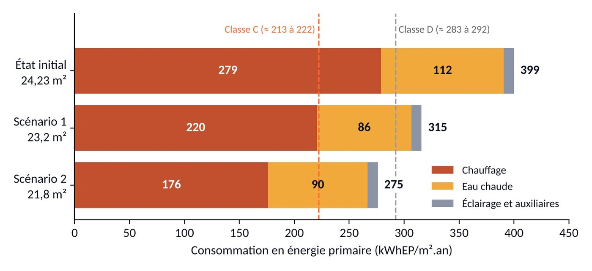

Un modèle calé sur le DPE
Sans visite, à partir du DPE, du dossier de diagnostics et du plan, j'ai reconstitué les parois et les équipements dans Pléiades jusqu'à un état initial à 399 kWhEP/m².an, à 3 % du DPE officiel. Ce calage permet de mesurer le gain de chaque travaux de façon cohérente avec le futur diagnostic, en tenant compte des seuils relevés des petites surfaces et de la surface perdue par l'isolation intérieure.
Deux niveaux d'intervention
| État initial | Scénario 1 | Scénario 2 | |
|---|---|---|---|
| Travaux | — | Murs sur rue isolés, radiateurs, ballon 65 L, VMC hygroréglable | Scénario 1 + murs sur circulations isolés |
| Consommation | 399 kWhEP/m².an | 315 kWhEP/m².an | 275 kWhEP/m².an |
| Classe estimée | F | E | D |
| Gain en énergie finale | — | −24 % | −38 % |

Viser l'eau chaude pour aller plus loin
Le scénario 2 fait gagner deux classes et sort le logement du statut de passoire. Plutôt que de forcer les hypothèses, l'étude explique pourquoi la classe C n'est pas atteinte et conseille d'étudier un appareil unique de ventilation et de production d'eau chaude sur air extrait, en listant les points à vérifier : encombrement, rejet d'air, accord de la copropriété, acoustique et budget.
Livrables : rapport de 22 pages (état initial calé sur le DPE, répartition des déperditions, gain par travaux, deux scénarios, dimensionnement des émetteurs, recommandations).
Étude réalisée par BETTHER, sur pièces et sans visite. Les classes indiquées sont des estimations et ne valent pas DPE. Maîtres d'ouvrage et adresse masqués.